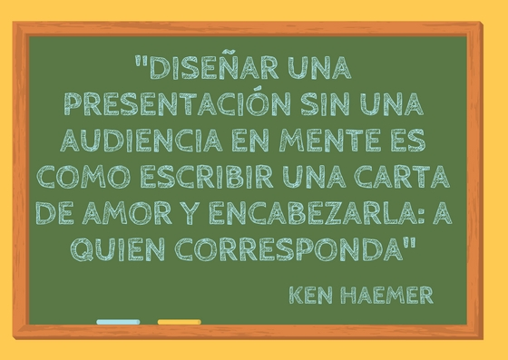

3 EL RECEPTOR

Con esta cita comienza el capítulo 3 del libro El Arte de Presentar de G. Álvarez Marañón (2012) y no hay metáfora mejor para esta idea ya que la eficacia comunicativa depende de cómo el emisor sea capaz de:
-preparar su intervención en función de las características de su audiencia y
-escuchar a su audiencia, en el sentido más amplio o profundo de la palabra.
Cabría pensar que la responsabilidad del proceso comunicativo es compartida entre emisor y receptor. Sin embargo, los expertos nos aconsejan que evitemos esa idea y que asumamos una responsabilidad total como emisores si queremos mejorar nuestras habilidades. Ya sabes, se trata de cambiar el “¿me has entendido?” por el “¿me he explicado?”.
G. Ballenato Prieto (2006) refiriéndose al emisor dice “él es quien debe procurarse, esforzarse por conocer a su interlocutor, conectar con sus motivaciones, captar su atención, interesarle, saber adaptar su mensaje, buscar el momento adecuado, y asegurarse y garantizar que su mensaje ha llegado y ha sido interpretado correctamente” .
Veamos cómo nos transmite esta misma idea G. Alvárez en su conferencia TEDx Gran Vía “Del miedo escénico al pánico escénico” (del minuto 11:40 al 12:30) a la vez que nos introduce en una metáfora recurrente: la ponencia como viaje.